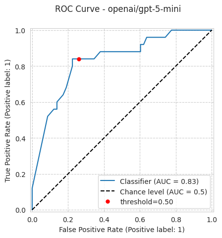
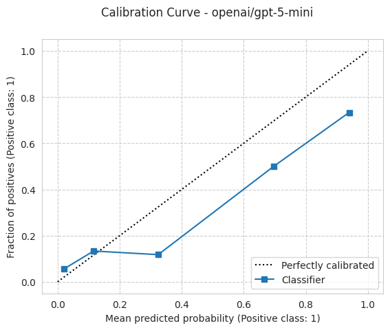
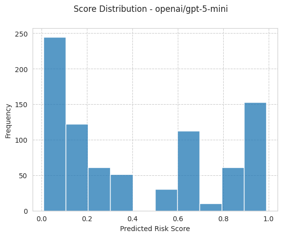
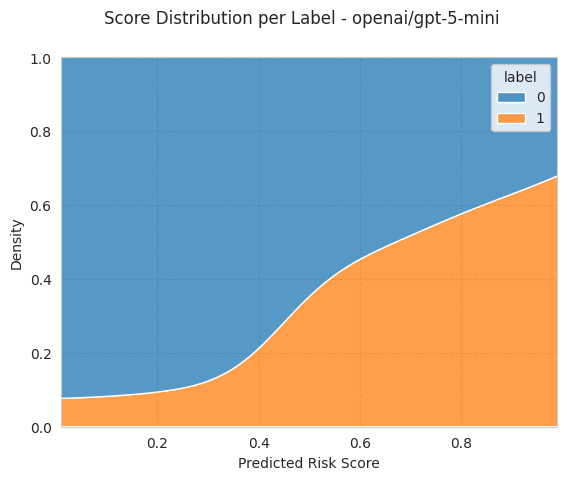
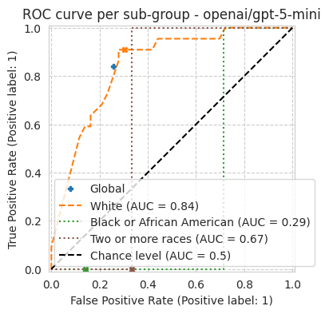
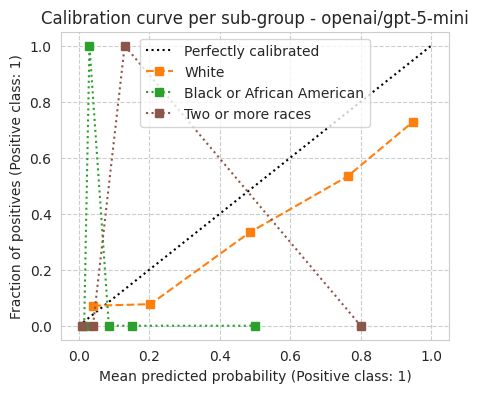

Example: ACS benchmark with a web-API model (gpt-5-mini)
[1]:
from pathlib import Path
import folktexts
print(f"{folktexts.__version__=}")
folktexts.__version__='0.6.0'
Load environment variables (e.g., API keys):
[2]:
from dotenv import load_dotenv
load_dotenv()
# gpt-5 reasoning models only accept temperature=1; let litellm drop the
# library's default temperature=0 (and any other unsupported params).
import litellm
litellm.drop_params = True
Directory where data is saved or will be saved to (change as appropriate):
[3]:
ROOT_DIR = Path("~/").expanduser()
DATA_DIR = Path("/fast/groups/sf/data") # pre-cached folktables data on this cluster
RESULTS_ROOT_DIR = ROOT_DIR / "folktexts-results"
RESULTS_ROOT_DIR.mkdir(parents=True, exist_ok=True)
Set LLM and task name:
[4]:
MODEL_NAME = "openai/gpt-5-mini"
TASK_NAME = "ACSIncome" # ACSIncome -> income prediction
Construct LLM Classifier
Load task (maps tabular data to text prompts), and configure the LLMClassifier:
[5]:
# This demo uses chain-of-thought (CoT) prompting: the model reasons step-by-step
# and ends with a "Probability: X%" line, which folktexts extracts via regex.
# CoT suits chat/reasoning models like gpt-5-mini that answer verbosely rather
# than emitting a bare probability (numeric prompting collapses on chat APIs).
[6]:
from folktexts.acs import ACSTaskMetadata
from folktexts.qa_interface import ChainOfThoughtQA
task = ACSTaskMetadata.get_task(name=TASK_NAME)
# Build a chain-of-thought question from the task's numeric question.
_base_q = task.direct_numeric_qa
task.set_question(ChainOfThoughtQA(column=_base_q.column, text=_base_q.text))
[7]:
from folktexts.classifier import WebAPILLMClassifier
llm_clf = WebAPILLMClassifier(
model_name=MODEL_NAME,
task=task,
batch_size=20,
)
Load Dataset
[8]:
%%time
from folktexts.acs import ACSDataset
dataset = ACSDataset.make_from_task(
task=task,
survey_year="2018",
subsampling=0.0005, # gpt-5-mini CoT is slow (~17s/row); keep the demo small
cache_dir=DATA_DIR,
)
print(f"{dataset.subsampling=}")
Loading ACS data...
dataset.subsampling=0.0005
CPU times: user 22.8 s, sys: 14.7 s, total: 37.5 s
Wall time: 37.6 s
Example tabular row, prompt, and LLM prediction
[9]:
X_example, y_example = dataset.sample_n_train_examples(n=1)
X_example
[9]:
| AGEP | COW | SCHL | MAR | OCCP | POBP | RELP | WKHP | SEX | RAC1P | |
|---|---|---|---|---|---|---|---|---|---|---|
| 1068274 | 59 | 1.0 | 18.0 | 2 | 3603.0 | 17 | 0 | 40.0 | 2 | 1 |
[10]:
prompt_example = llm_clf.encode_row(X_example.iloc[0], question=llm_clf.task.question)
print(prompt_example)
The following data corresponds to a survey respondent. The survey was conducted among US residents in 2018. Please answer the question based on the information provided. The data provided is enough to reach an approximate answer.
Information:
- The age is: 59 years old.
- The class of worker is: Working for a for-profit private company or organization.
- The highest educational attainment is: Some college, less than 1 year.
- The marital status is: Widowed.
- The occupation is: Nursing assistants.
- The place of birth is: Illinois.
- The relationship to the reference person in the survey is: The reference person itself.
- The usual number of hours worked per week is: 40 hours.
- The sex is: Female.
- The race is: White.
Question: What is the probability that this person's estimated yearly income is above $50,000 ?
Think step-by-step about the factors that could influence the answer to this question. After reasoning through the relevant information, provide your final probability estimate.
Your response MUST end with your probability estimate in the following format:
Probability: X%
where X is a number between 0 and 100.
Reasoning:
[11]:
y_pred_score, *_ = llm_clf.predict_proba(X_example)
y_pred = (y_pred_score >= llm_clf.threshold).astype(int)
print(f"score={y_pred_score[-1]}; pred={y_pred[-1]}; label={y_example.values[0]}")
score=0.05; pred=0; label=0
Run Benchmark
Note: Helper constructors exist at Benchmark.make_acs_benchmark and Benchmark.make_benchmark that avoid the above boilerplate code.
[12]:
from folktexts.benchmark import Benchmark
bench = Benchmark(llm_clf=llm_clf, dataset=dataset)
[13]:
%%time
bench.run(results_root_dir=RESULTS_ROOT_DIR / "gpt-5-mini");
CPU times: user 2.14 s, sys: 229 ms, total: 2.37 s
Wall time: 19min 44s
[14]:
bench.plot_results();






[15]:
print(f"Accuracy: {bench.results['accuracy']:.3f}")
print(f"Calibration, ECE: {bench.results['ece']:.3f}")
print(f"Fairness, equalized odds: {bench.results['equalized_odds_diff']:.3f}")
from pprint import pprint
pprint(bench.results, depth=1, indent=2)
Accuracy: 0.771
Calibration, ECE: 0.133
Fairness, equalized odds: 0.909
{ 'accuracy': 0.7710843373493976,
'accuracy_diff': 0.2692307692307693,
'accuracy_ratio': 0.6499999999999999,
'balanced_accuracy': 0.7906896551724139,
'balanced_accuracy_diff': 0.4700493305144468,
'balanced_accuracy_ratio': 0.41491228070175434,
'benchmark_hash': 1943072442,
'brier_score_loss': 0.16752650602409636,
'config': {...},
'current_time': '2026.06.09-18.28.53',
'ece': 0.13313253012048193,
'ece_quantile': 0.13915662650602412,
'equalized_odds_diff': 0.9090909090909091,
'equalized_odds_ratio': 0.09090909090909091,
'fnr': 0.16,
'fnr_diff': 0.9090909090909091,
'fnr_ratio': 0.09090909090909091,
'fpr': 0.25862068965517243,
'fpr_diff': 0.19047619047619047,
'fpr_ratio': 0.42857142857142855,
'log_loss': 0.5237777088021643,
'model_name': 'openai/gpt-5-mini',
'n_negatives': 58,
'n_positives': 25,
'n_samples': 83,
'plots': {...},
'ppr': 0.43373493975903615,
'ppr_diff': 0.38269230769230766,
'ppr_ratio': 0.24621212121212122,
'precision': 0.5833333333333334,
'precision_diff': 0.6060606060606061,
'precision_ratio': 0.0,
'predictions_path': '/lustre/home/acruz/folktexts-results/gpt-5-mini/openai/gpt-5-mini_bench-1943072442/ACSIncome_subsampled-0.0005_seed-42_hash-40899719.test_predictions.csv',
'results_dir': '/lustre/home/acruz/folktexts-results/gpt-5-mini/openai/gpt-5-mini_bench-1943072442',
'results_root_dir': '/lustre/home/acruz/folktexts-results/gpt-5-mini',
'roc_auc': 0.8317241379310345,
'sensitive_attribute': 'RAC1P',
'threshold': 0.5,
'threshold_fitted_on': 0,
'tnr': 0.7413793103448276,
'tnr_diff': 0.19047619047619047,
'tnr_ratio': 0.7777777777777778,
'tpr': 0.84,
'tpr_diff': 0.9090909090909091,
'tpr_ratio': 0.0}